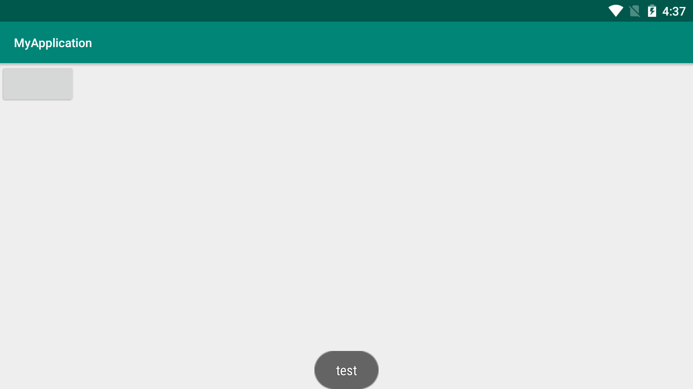
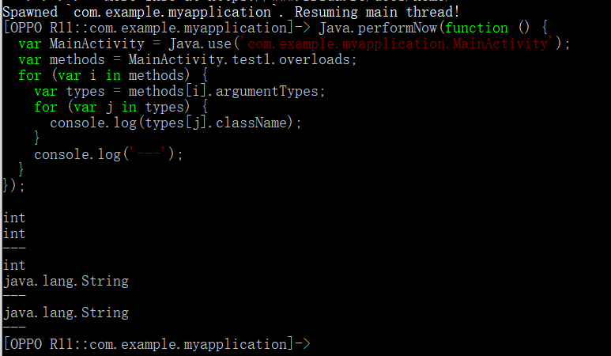
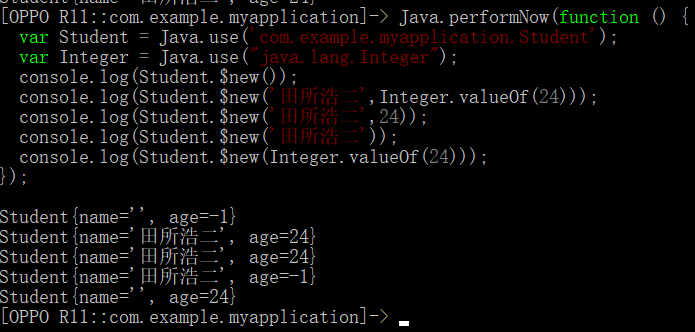
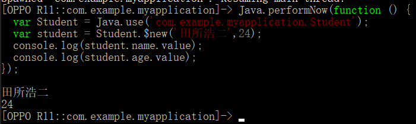
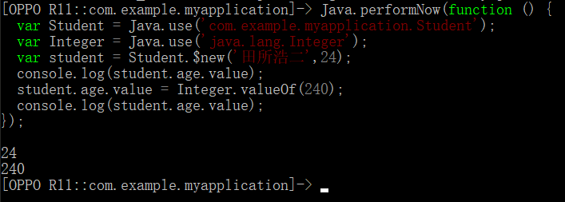
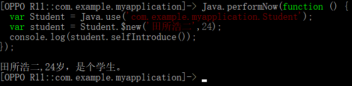
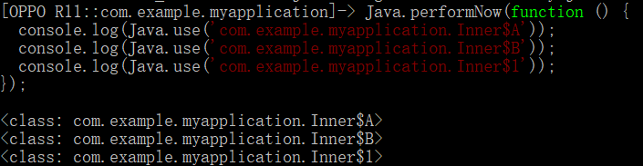
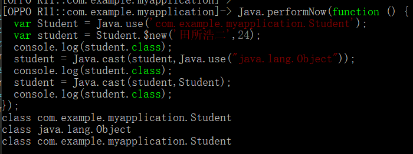

编写测试 APP
为方便测试，先写一个简单的 APP。
布局文件：
<?xml version="1.0" encoding="utf-8"?>
<LinearLayout xmlns:android="http://schemas.android.com/apk/res/android"
android:layout_width="match_parent"
android:layout_height="match_parent"
android:orientation="vertical">
<Button
android:id="@+id/button"
android:layout_width="wrap_content"
android:layout_height="wrap_content" />
</LinearLayout>MainActivity 代码：
package com.example.myapplication;
import android.os.Bundle;
import android.view.Gravity;
import android.widget.Button;
import android.widget.Toast;
import androidx.appcompat.app.AppCompatActivity;
/**
* @author yuan
* @version 1.0
* @date 2020/5/6 17:44
*/
public class MainActivity extends AppCompatActivity {
private static MainActivity staticIntance;
@Override
protected void onCreate(Bundle savedInstanceState) {
staticIntance = this;
super.onCreate(savedInstanceState);
setContentView(R.layout.activity_main);
Button btn = findViewById(R.id.button);
btn.setOnClickListener(v -> test());
}
private void show(String message) {
Toast toast = Toast.makeText(MainActivity.this, message, Toast.LENGTH_LONG);
toast.setGravity(Gravity.BOTTOM, 0, 0);
toast.show();
}
public void test() {
show("test");
}
public void test1(int a, int b) {
show("test " + (a + b));
}
public void test1(int a, String b) {
show("test " + (a + b));
}
public void test1(String b) {
show("test " + b);
}
protected void test2() {
show("test protected");
}
private void test3() {
show("test private");
}
public static void test4() {
Toast toast = Toast.makeText(staticIntance, "static", Toast.LENGTH_LONG);
toast.setGravity(Gravity.BOTTOM, 0, 0);
toast.show();
}
}再写一个 Student 类：
package com.example.myapplication;
/**
* @author yuan
* @version 1.0
* @date 2020/5/6 17:46
*/
public class Student {
public String name;
private Integer age;
public Student() {
this.name = "";
this.age = -1;
}
public Student(String name, Integer age) {
this.name = name;
this.age = age;
}
public Student(String name, int age) {
this.name = name;
this.age = age;
}
public Student(String name) {
this();
this.name = name;
}
public Student(Integer age) {
this();
this.age = age;
}
public String getName() {
return name;
}
public void setName(String name) {
this.name = name;
}
public Integer getAge() {
return age;
}
public void setAge(Integer age) {
this.age = age;
}
private String selfIntroduce() {
return this.getName() + "," + this.getAge() + "岁，是个学生。";
}
}最后写一个 Inner 类，在里面写两个内部类：
package com.example.myapplication;
/**
* @author yuan
* @version 1.0
* @date 2020/5/7 23:16
*/
public class Inner {
private class A {
}
public static class B {
}
private Map<String, String> map = new HashMap<String, String>() {{
put("A", "a");
put("B", "b");
put("C", "c");
}};
}导出 APK 并安装到夜神模拟器，测试运行：

Java 层操作总结
获取重载方法
如果要获取对应某个方法名的所有重载方法，可以使用语句 ClassName.methodName.overloads。
下面的代码获取了 test1 的各种重载，并输出了每种重载的参数类型：
Java.performNow(function () {
var MainActivity = Java.use('com.example.myapplication.MainActivity');
var methods = MainActivity.test1.overloads;
for (var i in methods) {
var types = methods[i].argumentTypes;
for (var j in types) {
console.log(types[j].className);
}
console.log('---');
}
});运行结果：

如果要获取其中的特定某个重载方法，可以使用 ClassName.methodName.overload(argumentTypes..)。
下面的代码 Hook 了 test() 方法，获取 test1(int,int) 并调用：
Java.performNow(function () {
var MainActivity = Java.use('com.example.myapplication.MainActivity');
MainActivity.test.implementation = function() {
this.test1.overload("int","int")(1, 2);
}
});运行结果：
如果参数类型不是基本类型，则需要使用类的全路径。例如 String 类需要使用 java.lang.String 来获取，Integer 需要使用 java.lang.Integer 来获取。数组类型需要加一个 [ 作为前缀，比如 int[] 对应的是 [I，而 String[] 对应的是 [java.lang.String。
获取 protected、private、static 方法
要获取 protected、private、static 的方法，实际上和获取 public 方法是一样的，使用 ClassName.mehtodName 或 ClassName.mehtodName.overloda(argumentTypes...) 即可。
获取构造方法
要获取构造方法，可以使用 ClassName.$init 或 ClassName.$init.overloda(argumentTypes...)。
对象的构造
要构造一个对象，可以使用语句 ClassName.$new(argumentTypes...)。
下面的代码调用了 Student 类的各个构造方法来构造对象：
Java.performNow(function () {
var Student = Java.use('com.example.myapplication.Student');
var Integer = Java.use("java.lang.Integer");
console.log(Student.$new());
console.log(Student.$new('田所浩二',Integer.valueOf(24)));
console.log(Student.$new('田所浩二',24));
console.log(Student.$new('田所浩二'));
console.log(Student.$new(Integer.valueOf(24)));
});运行结果：

字段值的获取和设置
可以通过 object.fieldName.value 来获取对象的字段值，也可以直接进行设置。无论字段的访问权限是 public、protected、private 还是包可见，都可以使用这种方式进行操作。
下面的代码获取了 Student 对象的 name 和 age 字段：
Java.performNow(function () {
var Student = Java.use('com.example.myapplication.Student');
var student = Student.$new('田所浩二',24);
// public
console.log(student.name.value);
// private
console.log(student.age.value);
});运行结果：

Java.performNow(function () {
var Student = Java.use('com.example.myapplication.Student');
var Integer = Java.use('java.lang.Integer');
var student = Student.$new('田所浩二',24);
console.log(student.age.value);
student.age.value = Integer.valueOf(240);
console.log(student.age.value);
});运行结果：

调用对象方法
可以使用语句 object.methodName() 的方式来调用对象的方法，各种访问权限的方法都可以直接调用。
下面的代码调用了 Student 类的 selfIntroduce() 方法：
Java.performNow(function () {
var Student = Java.use('com.example.myapplication.Student');
var student = Student.$new('田所浩二',24);
console.log(student.selfIntroduce());
});运行结果：

网上许多资料提到需要使用 method.setAccessible(true) 的方式设置私有方法的可访问性，我实际测试时并不需要使用 Java 中的反射写法，可能是新版的 Frida 在这方面做了一些优化。
获取内部类
内部类的获取也是使用 Java.use(className)，只需注意类名形式为 OuterClass$InnerClass 即可。匿名内部类需要使用 OuterClass$number 的形式来获取。
下面的代码获取了类 Inner 的两个内部类 A、B 和继承了 HashMap 的匿名内部类 $1。
Java.performNow(function () {
console.log(Java.use('com.example.myapplication.Inner$A'));
console.log(Java.use('com.example.myapplication.Inner$B'));
console.log(Java.use('com.example.myapplication.Inner$1'));
});运行结果：

强制类型转换
使用 Java.cast(object,Class) 可以转换一个对象的类型。
下面的代码将 Student 对象强制转换成了 Object 类型，然后再次转回 Student 类型：
Java.performNow(function () {
var Student = Java.use('com.example.myapplication.Student');
var student = Student.$new('田所浩二',24);
console.log(student.class);
student = Java.cast(student,Java.use("java.lang.Object"));
console.log(student.class);
student = Java.cast(student,Student);
console.log(student.class);
});运行结果：

总结
在 Frida 的 JS 脚本中操作 Java 类、方法和对象，和在 Java 中使用反射的思维方式差不多。